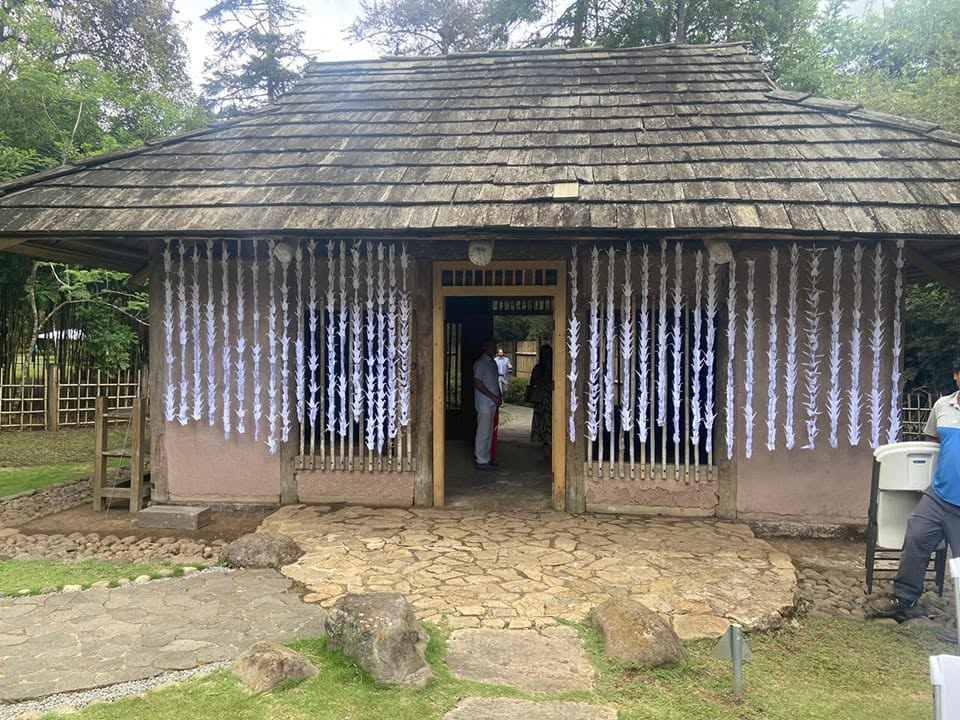

Fortalecer la amistad entre Costa Rica y Japón
Promover las relaciones entre ambos países mediante el intercambio de experiencias y la participación en actividades culturales.
 ExbecariosJapón · Costa Rica
Contáctanos
ExbecariosJapón · Costa Rica
Contáctanos
Una comunidad que une dos culturas
Somos exbecarios que compartimos experiencias, creamos comunidad y mantenemos vivos los lazos que nos unen a Japón.

Cultura, encuentro y nuevas perspectivasAgenda de la comunidad
Encuentros, actividades culturales y oportunidades para seguir conectándonos.
Hagamos comunidad
Escríbenos y síguenos para conocer las actividades de la asociación.
Quiénes somos
La Asociación de Exbecarios de Mombukagakusho de Japón en Costa Rica reúne a personas que han vivido la experiencia de estudiar en Japón y desean compartir lo aprendido con su comunidad.
Nuestro propósito
Conectamos personas, experiencias y conocimiento para fortalecer la amistad y el intercambio entre ambos países.
Una comunidad que acompaña a quienes regresan de Japón y abre camino para quienes están por iniciar su propia experiencia.
Basado en los fines y objetivos del Artículo 4 del acta constitutiva.
Lo que nos mueve
En síntesis, los fines establecidos en nuestra acta constitutiva.
Promover las relaciones entre ambos países mediante el intercambio de experiencias y la participación en actividades culturales.
Colaborar en la promoción, evaluación y selección de candidatos para los programas de becas.
Apoyar a quienes inician su experiencia y fortalecer la comunidad en su regreso a Costa Rica, en lo personal, académico y profesional.
Facilitar la comunicación entre exbecarios, la Embajada de Japón y organizaciones japonesas, poniendo en común la experiencia académica y laboral.
Sumarnos a iniciativas de la Embajada y otras organizaciones que promueven el acercamiento entre ambos países.
Consulta por tema
El estatuto, resumido en secciones desplegables para que puedas consultar solo lo que te interesa.
La Asociación de Exbecarios de Mombukagakusho de Japón en Costa Rica es una entidad privada, no lucrativa, no partidista ni religiosa, y de duración indefinida. El acta constitutiva es del 7 de mayo de 2014.
Su domicilio estatutario está en San José, Sabana Norte, Torre La Sabana, piso 10, Embajada de Japón. Puede participar en federaciones y confederaciones nacionales o internacionales, de acuerdo con la legislación aplicable.
El estatuto contempla personas asociadas fundadoras, activas y honorarias. Las personas honorarias son recomendadas por la Junta Directiva y aprobadas por la Asamblea; tienen voz, pero no voto ni cargos directivos, y no están sujetas a los deberes de las categorías fundadora y activa.
Para solicitar afiliación se requiere ser mayor de edad y exbecario/a de Mombukagakusho o tener un vínculo con el programa. La solicitud escrita se presenta a la Junta Directiva, acompañada por la recomendación razonada de una persona fundadora o activa y el pago de la cuota de ingreso. La Junta dispone de un mes para responder.
Elegir y postularse a cargos; participar con voz y voto en las asambleas (un voto por persona); presentar propuestas; comunicar irregularidades; proponer la suspensión o exclusión de asociados; defenderse en procesos disciplinarios; proponer cambios al estatuto y participar en las actividades.
Respetar la ley, el estatuto y los acuerdos; asistir a reuniones convocadas; pagar las cuotas aprobadas; cuidar los bienes y el buen nombre de la Asociación; apoyar sus fines y colaborar en la organización y divulgación de eventos.
La condición de asociado/a puede terminar por fallecimiento, renuncia escrita luego de cumplir las obligaciones pendientes o expulsión acordada en Asamblea Extraordinaria. Entre las causas de expulsión están adeudar tres cuotas anuales consecutivas sin justificación, actuar sin autorización en nombre de la Asociación y usar indebidamente su nombre o bienes.
El estatuto contempla el derecho de defensa: la persona debe recibir por escrito las razones y dispone de 15 días hábiles para responder. Las medidas correctivas incluyen advertencia, suspensión hasta por seis meses o pérdida de la condición de asociado/a. Una medida correctiva puede impugnarse ante la Junta Directiva dentro de 15 días hábiles; la Junta debe resolver en los 10 días hábiles siguientes.
La Asociación cuenta con Asamblea General, Junta Directiva y Fiscalía. La Asamblea, integrada por las personas asociadas activas, es el órgano máximo. Se reúne ordinariamente una vez al año y extraordinariamente cuando la convoque la Junta, la Fiscalía o al menos un tercio de las personas asociadas. La convocatoria se envía por correo electrónico con ocho días naturales de anticipación y se confirma dentro de las 48 horas siguientes. Para la primera convocatoria se requiere la mitad más uno de los asociados; si no hay quórum, puede sesionar 60 minutos después con quienes estén presentes, respetando el mínimo establecido en el estatuto. Las decisiones se toman por mayoría simple, salvo cuando se exigen dos tercios.
La Asamblea Ordinaria elige cada dos años, mediante voto secreto, a la Junta y a la Fiscalía; conoce informes; aprueba el plan de trabajo, presupuesto, cuotas y reglamentos; y decide sobre compras y donaciones. La Extraordinaria puede cubrir vacantes, reformar el estatuto, resolver expulsiones, aprobar alianzas, atender asuntos urgentes o acordar la disolución.
La Junta Directiva es el órgano ejecutivo y administrativo. La integran siete personas: presidencia, vicepresidencia, secretaría, tesorería y tres vocalías, por periodos de dos años; el periodo inicia el 16 de mayo. Cumple los acuerdos, administra y revisa los recursos, recibe solicitudes de afiliación, convoca asambleas, nombra comisiones y presenta su informe anual.
La presidencia representa a la Asociación y dirige las sesiones; la vicepresidencia la sustituye temporalmente. La secretaría prepara actas, lleva los registros y tramita comunicaciones. La tesorería recauda cuotas, custodia los fondos y presenta informes financieros. Las vocalías apoyan las gestiones y sustituyen temporalmente a otros miembros según el estatuto.
La Fiscalía es independiente y la ocupa una persona elegida por dos años. Supervisa las operaciones y el cumplimiento del estatuto, presenta un informe anual, atiende inquietudes, investiga anomalías y puede solicitar una Asamblea Extraordinaria. Puede participar en sesiones de Junta con voz, pero sin voto, cuando se traten asuntos de su gestión.
Los recursos pueden provenir de cuotas de ingreso y anuales, contribuciones voluntarias, subvenciones y partidas públicas, donaciones, aportes voluntarios de jurados durante la selección de becarios y otras fuentes propuestas por la Junta y aprobadas por la Asamblea General.
El patrimonio se destina exclusivamente a los fines de la Asociación: no se distribuyen utilidades entre sus miembros. Si los ingresos lo permiten, la Asamblea determina qué parte apoyar iniciativas de responsabilidad social. Los bienes pertenecen a la Asociación, no a cada persona asociada; los bienes inmuebles requieren autorización expresa de la Asamblea para su disposición.
Las reformas al estatuto requieren una Asamblea Extraordinaria y el voto favorable de dos tercios de las personas asociadas activas presentes; luego se inscriben conforme a la ley. Las dudas de interpretación las resuelve la Junta Directiva; si hay controversia, el estatuto prevé solicitar criterio profesional en derecho. Los asuntos no contemplados se resuelven en Asamblea Extraordinaria por mayoría simple.
La disolución se rige por las causas previstas en la Ley de Asociaciones. La liquidación de los bienes se realiza conforme a la ley, con las salvedades previstas para bienes provenientes de subvenciones, partidas públicas, legados o donaciones.
Nuestra asociación
Según el Artículo 1 del acta constitutiva, la Asociación es una entidad privada, no lucrativa, no partidista ni religiosa, y de duración indefinida.
Acta constitutiva: 7 de mayo de 2014.
La cédula jurídica no aparece en el texto del acta que recibimos. La agregaremos cuando el número sea confirmado.
Desde Costa RicaSigamos en contacto